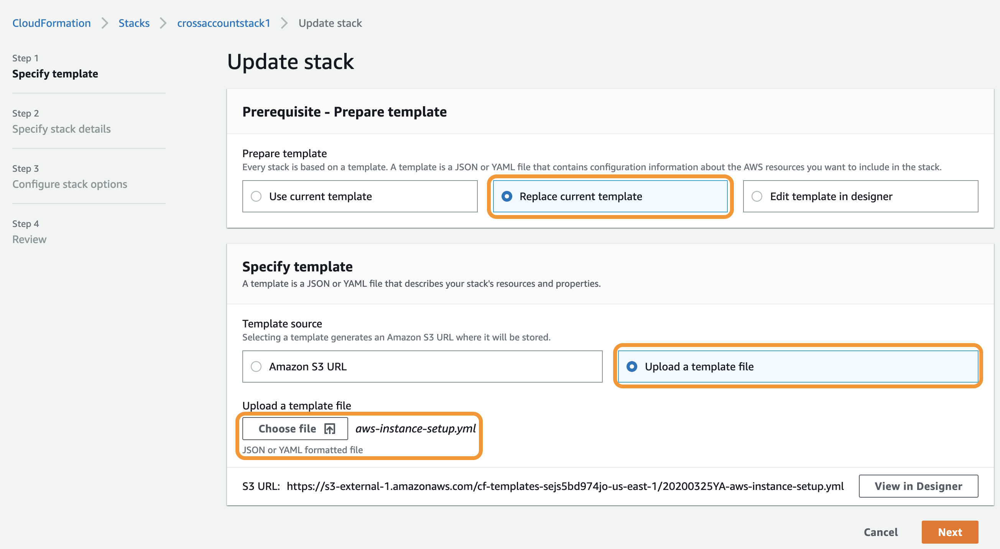

Setting Up Multiple AWS Accounts using the New UI
Netskope has a new set up process to configure multiple AWS accounts with Netskope’s Public Cloud Security features such as Continuous Security Assessment and Storage Scan, which includes DLP Scan and Threat Protection (Malware Scan). The set up uses a Cloud Formation Template (CFT), aws-instance-setup.yml that is customized with permissions required for Netskope for IaaS. These permissions vary depending on the services you want to enable on your AWS accounts.
For example, if you enable DLP Scan or Threat Protection (Malware Scan) on your accounts, then aws-instance-setup.yml sets up cross-account access between Netskope and the AWS accounts to create a CloudWatch event stack called NetskopeStack in all regions of the AWS accounts. This stack subscribes the AWS accounts to Netskope's notification receiver to receive CloudWatch events generated from write, update, and delete operations performed on S3 buckets in your AWS accounts. For more information, see "What happens in the process?" section in Step 2/2: Permissions.
The Cloud Infrastructure pages in the Netskope UI provide details about all the events and scan results.
The new setup enables,
Simplified bulk setup of multiple AWS accounts with Netskope for IaaS.
Scanning S3 buckets for DLP violations and malware with improved efficiency using CloudWatch events.
Important
IaaS Storage Scan (DLP and Threat Protection) feature does not support quarantine and legal hold functionalities. If you have configured a DLP or Malware quarantine profile with an external storage provider such as OneDrive, the file would be copied to that location. However, the file would not be removed from its original location in the public cloud storage, AWS S3.
Prerequisites
Before you begin the setup process, ensure that:
You make a list of AWS account numbers with their account names and admin email addresses you want to configure with Netskope for IaaS. Email address is optional.
An account name will help you easily identify the AWS account in the Netskope tenant.
Note
Netskope recommends using the same account name as the AWS account alias. If an account alias is not available for the AWS account, then provide an account name for the AWS account.
For information on creating a list of AWS account numbers, see "Creating a CSV file" in Step 1/2: Accounts & Services.
A CloudWatch service is running on your AWS accounts. Storage Scan requires CloudWatch service to receive notifications.
For information on setting up CloudWatch, see the AWS documentation on CloudWatch.
If you are enabling DLP Scan or Threat Protection (Malware Scan) on your accounts, then we recommend enabling object-level logging for S3 buckets. Enabling read and write data events for objects in the S3 bucket reduces delays in receiving event notifications.
For instructions on enabling object-level logging for S3 buckets, see the following AWS documentation links.
https://docs.aws.amazon.com/AmazonS3/latest/user-guide/enable-cloudtrail-events.html
https://docs.aws.amazon.com/AmazonS3/latest/dev/ServerLogs.html#LogDeliveryBestEffort
https://www.netskope.com/blog/aws-s3-logjam-server-access-logging-vs-object-level-logging
Implementation guide to set up AWS accounts in Netskope
Are you a new customer?
You can setup your AWS accounts in Netskope using one of the following methods:
Add AWS accounts to Netskope using the Netskope UI
This method requires you to:
Access the Netskope tenant,
Add your AWS accounts,
Select the Netskope for IaaS services you want to enable on these accounts and,
Download the CFT aws-instance-setup.yml.
Using a REST API
This method requires a REST API token. You can call the following endpoint to add multiple AWS accounts to Netskope.
https://<tenant-name>.goskope.com/api/v1/public_cloud/account?token=<token>&op=create
For more information on using this API endpoint see, .
Are you an existing customer?
Migrate existing instances of AWS accounts by following the detailed instructions in Migrate existing AWS accounts to the new set up.
Setup new AWS accounts in Netskope using one of the following methods:
Add AWS accounts to Netskope using the Netskope UI
This method requires you to:
Access the Netskope tenant,
Add your AWS accounts,
Select the Netskope for IaaS services you want to enable on these accounts and,
Download the CFT aws-instance-setup.yml.
Using a REST API
This method requires a REST API token. You can call the following endpoint to add multiple AWS accounts to Netskope.
https://<tenant-name>.goskope.com/api/v1/public_cloud/account?token=<token>&op=create
For more information on using this API endpoint see, .
Add AWS accounts to Netskope using the Netskope UI
To configure your AWS accounts with Netskope for IaaS, in the Netskope UI go to Settings > API-enabled Protection > Cloud Infrastructure. Click Setup and refer to the instructions in the following steps.
Note
If you want to modify or migrate the Netskope for IaaS services for existing AWS accounts that were configured using the old set up process, follow the instructions in Migrate existing AWS accounts to the new set up.
Step 1/2: Accounts & Services
On the Accounts & Services screen provide your AWS account number, account name, and admin email address. Then enable the services you want to run on the AWS accounts.
Enter the AWS account number, account name, and admin email address in the text box. You can upload a CSV file with the account information, or enter them individually using the following format:
123456789012,test,andrew@netskope.com 764389765412,develop 345689713654,production,timms@netskope.com
Note
Account name is required to help you easily identify each account in the Netskope tenant. Email address is optional.
For information on how to create a CSV file, see Creating a CSV file.
In the Services section, select the services you want to enable on the AWS accounts.
Security Assessment: Scans the AWS resources for misconfigurations and measures them against compliance benchmarks and best practices such as, CIS, PCI-DSS, NIST, and Netskope's recommended best practices.
You can view the compliance status of your resources in the Cloud Infrastructure > Overview, Cloud Infrastructure > Compliance, and Cloud Infrastructure > Inventory pages.
For information on configuring security assessment policies and rules, see the ??? documentation.
DLP Scan: Scans the S3 buckets for sensitive data and generates events when buckets are created, modified, or deleted. You can view the DLP Incidents in the Cloud Infrastructure > Overview , SkopeIT > Alerts, and Incidents > DLP pages.
DLP is a licensed feature. Contact Support and get the license to enable this feature in your tenant UI.
For information on using DLP policies, rules, and data identifiers to scan for DLP violations, see the Data Loss Prevention documentation.
Threat Protection (Malware Scan): Scans the S3 buckets for malware. Threat Protection is a licensed feature. Contact Support and get the license to enable this feature in your tenant UI.
You can view the malware alerts in the SkopeIT > Alerts and Incidents > Malware pages.
For information on configuring a malware detection profile, see Create a Malware Detection Profile.
After providing the account information and selecting the services, proceed to Step 2/2: Permissions.
Creating a CSV file
An effortless way to add multiple AWS accounts in the setup screen is to create a CSV file with the account numbers, account names, and email addresses.
You can use Microsoft Excel or Google Sheets to create a CSV file. To get the list of AWS account numbers, account names, and email addresses using the AWS CLI, run the following command:
aws --output=text organizations list-accounts | awk -F'\t' '{printf("%s,%s,%s\n",$4,$7,$3)}'The output of this command can then be copied to a spreadsheet in Microsoft Excel or Google Sheets and saved as a comma separated CSV, as shown in the screenshot.

This CSV file can then be uploaded to the setup screen.
Step 2/2: Permissions
Netskope requires permissions to perform certain actions in the AWS account such as assuming a role to scan your AWS resources, or creating a stack to receive CloudWatch events. This screen provides a customized CFT with permissions required to set up cross account access between Netskope and your AWS accounts. The permissions are defined in the CFT and differ based on the services you've enabled in the previous step.
You can review the CFT to understand the various permissions required by Netskope.
Note
Ensure that the AWS accounts have the permissions required to run the Netskope for IaaS services.
To complete the set up you must:
Download the CFT.
Upload the CFT to a new CloudFormation stack in each AWS account.
Confirm that a cross account role with the required permissions is created.
Follow the detailed instructions below to complete the set up.
In the Permissions screen of the New Setup window, click the link to download the CFT.

Log in to the AWS Management Console using the credentials of the AWS account you are setting up with Netskope for IaaS and navigate to Services > CloudFormation.
In the CloudFormation page, click Create stack.

To create a stack with new resources, choose With new resources (standard).
To create a stack with existing resources, choose With existing resources (import resources).
Select Upload a template file and click Choose file to upload the aws-instance-setup.yml. Click Next.

In the Specify stack details page, specify a Stack name. Click Next.
The stack name must:
Only contain alphanumeric characters and hyphens,
start with an alphabet, and
not be longer than 128 characters.
In the Configure stack options page, use the default configuration and click Next.
Review your stack details on the Review page, click the acknowledgment and then click Create stack.
When the creation process is complete, your stack will be displayed on the CloudFormation page.
You can click on the stack to view the details about the stack. The Resources tab displays the various components that are part of aws-instance-setup.yml. The Template tab displays the permissions defined in the template.
In the Netskope UI, confirm that a cross account role with permissions is created in each AWS account. Click Add Accounts.

Netskope adds the AWS accounts to the Settings > API-enabled Protection > Cloud Infrastructure page. The page also displays the services that are enabled for each account.

What happens in the process?
When DLP Scan or Threat Protection (Malware Scan) is enabled Netskope's aws-instance-setup.yml creates a cross-account role in the AWS accounts which enables the CFT to create,
a new CloudFormation stack called NetskopeStack in each region of this account where DLP Scan or Threat Protection (Malware Scan) is enabled.
CloudWatch event rules to monitor events in S3 buckets. Netskope creates and monitors the following rules,
RestoreObject, PutObject, PutObjectAcl, CopyObject, DeleteObject, CreateMultipartUpload, UploadPart, UploadPartCopy, CompleteMultipartUpload.
an SNS Topic, Policy, and Subscription to subscribe the AWS accounts to Netskope's endpoint URL. The endpoint is a notification receiver that receives CloudWatch events generated from write, update, and delete operations performed on S3 buckets in your AWS accounts.
Netskope requires permissions to monitor and receive events from S3 buckets in your AWS accounts. The cross-account role creates two IAM policies, StorageScanPolicy and CloudFormationPolicy.
StorageScanPolicy is created with the following permissions,
AWS Permissions for StorageScanPolicy | Purpose |
|---|---|
s3:ListAllMyBuckets | This implementation of the GET operation returns a list of all buckets owned by the authenticated sender of the request. |
s3:ListBucket | Lists a specific bucket |
s3:GetObject | This implementation of the GET operation retrieves objects from Amazon S3. |
s3:GetObjectAcl | This implementation of the GET operation uses the acl subresource to return the access control list (ACL) of an object. |
s3:GetBucketLocation | This implementation of the GET operation uses the location subresource to return a bucket's region. |
ec2:DescribeRegions | Describes one or more regions that are currently available to you. |
CloudFormationPolicy is created with the following permissions,
AWS Permissions for CloudFormationPolicy | Purpose |
|---|---|
cloudformation:DescribeStacks | Returns the description for the specified stack; if no stack name was specified, then it returns the description for all the stacks created. |
sns:Publish | Sends a message to all endpoints a topic is subscribed to. |
sns:Unsubscribe | Deletes a subscription. |
sns:Subscribe | Prepares to subscribe an endpoint by sending the endpoint a confirmation message. |
sns:ConfirmSubscription | Verifies an endpoint owner's intent to receive messages by validating the token sent to the endpoint by an earlier Subscribe action. |
sns:SetTopicAttributes | Allows a topic owner to set an attribute of the topic to a new value. |
sns:CreateTopic | Creates a topic to which notifications can be published. |
sns:DeleteTopic | Deletes a topic and all its subscriptions. |
sns:GetTopicAttributes | Returns all the properties of a topic. |
events:DescribeRule | Describes the details of the specified rule. |
events:ListRules | Lists the Amazon CloudWatch Events rules. |
events:PutEvents | Sends custom events to Amazon CloudWatch Events so that they can be matched to rules. |
events:EnableRule | Enables a rule. |
events:PutRule | Creates or updates a rule. |
events:PutTargets | Adds targets to a rule. |
events:RemoveTargets | Removes targets from a rule so that when the rule is triggered, those targets will no longer be invoked. |
events:DeleteRule | Deletes a rule. |
sns:ListTopics | Returns a list of the requester's topics. |
cloudformation:CreateStack | Creates a stack as specified in the template. |
cloudformation:UpdateStack | Updates a stack as specified in the template. |
cloudformation:DeleteStack | Deletes a specified stack. |
Note
The NetskopeStack is managed by Netskope and must not be manually updated.
When Security Assessment scan is enabled, Netskope assumes an IAM role which enables Netskope to scan for all the resources in your AWS environment. In this case, the CFT aws-instance-setup.yml requires the following permissions to scan for resources.
AWS Permissions for Security Assessment | Purpose |
|---|---|
s3:ListBucket | Lists a specific bucket. |
ses:ListIdentityPolicies | Returns a list of sending authorization policies that are attached to the given identity (an email address or a domain). |
s3:GetBucketAcl | This implementation of the GET operation uses the acl subresource to return the access control list (ACL) of a bucket. |
s3:GetBucketLocation | This implementation of the GET operation uses the location subresource to return a bucket's region. |
s3:ListAllMyBuckets | This implementation of the GET operation returns a list of all buckets owned by the authenticated sender of the request. |
dynamodb:ListTagsOfResource | Lists all tags on an Amazon DynamoDB resource. |
sqs:ListDeadLetterSourceQueues | Returns a list of your queues that have the RedrivePolicy queue attribute configured with a dead letter queue. |
sqs:GetQueueUrl | Returns a list of your queues. |
sqs:GetQueueAttributes | Gets attributes for the specified queue. |
lambda:Get* | Returns the specified alias information such as the alias ARN, description, and function version that the Lambda function is pointing to. Also returns the configuration information of the Lambda function and a presigned URL link. |
lambda:List* | Returns list of aliases created for a Lambda function. Returns a list of your Lambda functions. Lists all versions of a function. |
cloudwatch:GetMetricStatistics | Gets statistics for the specified metric. |
Scanning S3 Buckets encrypted with KMS keys
You must configure your AWS environment to provide Netskope with the necessary permissions to enable storage scan on S3 Buckets that are encrypted with KMS keys.
To provide the required permissions to Netskope, copy the IAM role created by Netskope's CFT into each KMS key policy and provide the specified Sid, Action and Condition.
Follow these detailed instructions.
Log in to the AWS Management Console using the credentials of the AWS account you are setting up with Netskope for IaaS and navigate to Services > IAM > Roles.
Under Roles, search for Netskope_Role and copy the Role ARN for this role.
Navigate to Services > Key Management Service.
Under Customer managed keys go to each KMS key used to encrypt S3 Buckets and edit the Key policy.
Under the Key policy of each KMS key, click Edit.
Edit the Statement section of the policy to include the following:
{ "Sid": "Enable Netskope to use KMS via S3", "Effect": "Allow", "Principal": { "AWS": "arn:aws:iam::<customer_account_id>:role/Netskope_Role" }, "Action": "kms:Decrypt", "Resource": "*", "Condition": { "StringEquals": { "kms:ViaService": "s3.us-west-1.amazonaws.com" } } }Edit the Sid to Enable Netskope to use KMS via S3.
Paste the Role ARN of Netskope_Role under AWS.
Edit Action to kms:Decrypt.
Add the Condition as provided above.
The condition key ensures that Netskope does not perform any action directly on the KMS key but only through the S3 managed service.
Note
Since KMS can only encrypt buckets in the same region as the key ensure that kms:ViaService matches the region of the KMS key.
Save the key policy changes as AWS-KMS.
Post set up updates
You can change or modify the email address and, add or remove services from AWS accounts in the Netskope UI. When you add or remove services from an account, a new CFT is generated with updated permissions. The new CFT must be uploaded to the CloudFormation stack in the AWS account to update the account with the service changes. However, changing only the email address does not generate a new CFT and does not require you to update the CloudFormation stack.
In the Settings > API-enabled Protection > Cloud Infrastructure page, click on the AWS account to view the edit screen.
If you only want to edit the email address, provide the new Admin email and click Save.
If you have added or removed services on this screen, download the new CFT and update the CloudFormation stack in the AWS accounts. For instructions on how to update the stack, see Updating the stack.
Confirm that a cross account role with permissions is created in each AWS account. Click Save.
Alternatively, you can use Netskope's REST API to update a Netskope instance of the AWS account.
https://<tenant-name>.goskope.com/api/v1/public_cloud/account?token=<token>&op=update
For more information on REST API endpoints see, Public Cloud API Endpoints.
Updating the stack
When a new CFT is generated in the Netskope UI, you must update the CloudFormation stack with the latest CFT. To update the stack,
Log into the AWS Management Console and navigate to the CloudFormation page.
Click on the stack you created previously to upload the CFT.
In the stack page, click Update.

In the Update stack page, select Replace current template and under Specify Template, select Upload a template file.
Click Choose file to upload the new aws-instance-setup.yml. Click Next.
Click Next on the Specify stack details page and the Configure stack options page.
Review your stack details on the Review page and click Update stack.
Migrate existing AWS accounts to the new set up
If you have existing AWS accounts in your Netskope tenant that use the old set up where DLP and malware scans are performed using CloudTrail events, then you can migrate them to the new set up which uses CloudWatch events to efficiently scan your resources for DLP violations and malware.
You can use one of the following methods to migrate your accounts.
Bulk migrate using migration_script.py
You can run the script, migration_script.py to migrate several accounts at the same time. The script requires you to create a CSV file with the following information,
<instance_name>,<api_token>,<tenant_url>,<aws_access_key_id>,<aws_secret_key>,<aws_region> <instance_name>,<api_token>,<tenant_url>,<aws_access_key_id>,<aws_secret_key>,<aws_region>
where,
<instance_name> is the name of the AWS account instance in the Netskope tenant.
<api_token> is the REST API token from the Netskope tenant under Settings > Tools > REST API.
<tenant_url> is the Netskope tenant URL.
<aws_access_key_id> and <aws_secret_key> are the keys from the AWS account.
<aws_region> is the AWS region in which you want the script to upload the migration CFT, aws-instance-setup.yml. For information about the steps performed by the script, see About migration_script.py.
About migration_script.py
This script, migration_script.py performs the following steps.
Reads the CSV file and verifies that the instance for the AWS account exists in the specified Netskope tenant.
Uses the API token to call the REST API and download the migration CFT,
aws-instance-setup.yml. The template is customized based on the Netskope Public Cloud services enabled for the account.Uses the provided AWS access key and secret key to connect to the AWS account and creates a stack called netskopeCAR in the specified AWS region.
Uploads
aws-instance-setup.ymlto netskopeCAR stack. When the stack creation is complete, the AWS accounts have been migrated to the new set up.
For information on aws-instance-setup.yml and the background process, see "What happens in the process?" section in Step 2/2: Permissions.
Run migration_script.py
To run migration_script.py,
Create a file called
migration_script.pyand copy the following script into the file.import argparse import requests import time import csv import json import boto3 import random from botocore.exceptions import ClientError import concurrent.futures from datetime import datetime STACK_UP_TO_DATE = 'No updates are to be performed' STACK_NOT_EXIST = 'does not exist' MAX_RETRIES = 8 MIN_STACK_WAIT = 1 MAX_STACK_WAIT = 10 CLOUDFORMATION_SERVICE = 'cloudformation' STACK_NAME = 'netskopeCAR' STACK_SUCC_STATES = ['CREATE_COMPLETE','UPDATE_COMPLETE'] IN_PROGRESS = 'IN_PROGRESS' ROLLED_BACK = 'ROLLBACK_COMPLETE' FAILED = 'FAILED' STACKS = 'Stacks' STACK_STATUS = 'StackStatus' STACK_ID = 'StackId' STACK_STATUS_REASON = 'StackStatusReason' APP = "aws" PATH = "/api/v1/public_cloud/account" def get_instance(hostname, app, instance_name, token): """ Get instance details :param hostname: tenant host :param app: app name 'aws' :param instance_name: name of the instance :param token: REST API token :return: instance details or Exception """ print("Getting info for {}".format(instance_name)) params = { "app": app, "instance_name": instance_name, "token": token } headers = { "Content-Type" : "application/json", "Accept" : "application/json" } get_response = requests.get("https://{}/api/v1/introspection_instance".format(hostname), headers=headers, params=params, verify=False) response_data = {} json_output = json.loads(get_response.text) if json_output.get("status") == "error": raise Exception('Errors: {}'.format(json_output.get("errors"))) response_data["use_for"] = json_output["data"]["instance"]["use_for"] response_data["admin_email"] = json_output["data"]["instance"]["admin_email"] if "securityscan" in response_data["use_for"]: response_data["securityscan_interval"] = json_output["data"]["instance"]["securityscan_interval"] print("Returning info for name {}: {}".format(instance_name, response_data)) return response_data def download_cft(hostname, token, app, instance_name, admin_email, usefor, securityscan_interval): """ call the download of the migration CFT for the instance :param hostname: tenant host :param token: REST API token :param app: app name 'aws' :param instance_name: instance name :param admin_email: admin email for the instance :param usefor: services used by the instance :param securityscan_interval: security scan interval :return: CFT content or Exception """ print("Downloading Migration Template for {}".format(instance_name)) qparams = {"token":token, "op":"download"} headers = { "Content-Type" : "application/json" } data = { "app": app, "type": "cft", "use_for": usefor, "mode" : "migrate", "admin_email" : admin_email, "instance_name": instance_name, "securityscan_interval": securityscan_interval } res = requests.post("https://{}{}".format(hostname, PATH), headers=headers, params=qparams, data=json.dumps(data), verify=False) response = res.text if response.startswith("{"): json_output = json.loads(response) if json_output.get("status") == "error": raise Exception('For instance "{}" errors received: {}'.format(instance_name, json_output.get("errors"))) return response def create_resource(instance_name, region, access_key, secret_key, template): """ Call stack creation and wait the stack creation to be completed :param instance_name: name of the instance :param region: region in which the stack will be created :param access_key: access key id for target aws account :param secret_key: secret key for the target aws account :param template: CFT template :return: Exception if encountered """ try: print("creating stacks....") client = boto3.client(CLOUDFORMATION_SERVICE, aws_access_key_id=access_key, aws_secret_access_key=secret_key, region_name=region) if not stack_exists(client, STACK_NAME, region): print("stack does not exist, creating stack") response = client.create_stack( StackName=STACK_NAME, TemplateBody=template, Capabilities=['CAPABILITY_NAMED_IAM'] ) now = datetime.now() start_time = datetime.timestamp(now) else: raise Exception("Stack already present for instance: {}".format(instance_name)) print("Waiting Stack creation to be completed for {}".format(instance_name)) while True: time.sleep(random.randint(MIN_STACK_WAIT, MAX_STACK_WAIT)) stacks = client.describe_stacks(StackName=response[STACK_ID]) stack_status = stacks[STACKS][0][STACK_STATUS] if stack_status in STACK_SUCC_STATES: print("Stack creation for {} was successful".format(instance_name)) break if IN_PROGRESS not in stack_status: if stack_status == ROLLED_BACK or FAILED in stack_status: reason = stacks[STACKS][0].get(STACK_STATUS_REASON) if reason: raise Exception("Exception received while creating stack {} for instance : {} , {}".format(STACK_NAME, instance_name, reason)) else: raise current_time = datetime.timestamp(datetime.now()) if start_time + 600 < current_time: raise Exception("Stack creation for {} took longer than expected, please check the AWS console".format(instance_name)) except ClientError as exc: if STACK_UP_TO_DATE not in str(exc): raise else: print("{} Stack {} already up to date and no updates are to be performed".format(instance_name, STACK_NAME)) except Exception as exc: raise def stack_exists(client, name, region): """ Check if the stack with the provided name is already present :param client: client :param name: name of the stack :param region: region in which the stack is to be deployed :return: true if stack exists """ try: while True: stacks = client.describe_stacks(StackName=name) stack_status = stacks[STACKS][0][STACK_STATUS] if 'IN_PROGRESS' in stack_status: time.sleep(random.randint(MIN_STACK_WAIT, MAX_STACK_WAIT)) elif ROLLED_BACK == stack_status or FAILED in stack_status: print("Stack in {} state. Stack cannot be recovered, triggering\ deleting stack in region : {}".format(stack_status, region)) client.delete_stack(StackName=STACK_NAME) time.sleep(random.randint(MIN_STACK_WAIT, MAX_STACK_WAIT)) else: return True except ClientError as exc: if STACK_NOT_EXIST in str(exc): return False else: raise def start_migration(row): """ Caller method for gathering the instance details call methods for Getting instance details Download migration CFT call creation of stack :param row: single row containing the instance details :return: """ details = { "instance_name": row[0], "apitoken": row[1], "tenant_url": row[2], "access_key_id" : row[3], "secret_key": row[4], "region": row[5] } hostname = details["tenant_url"] instance_name = details["instance_name"] apitoken = details["apitoken"] region = details["region"] access_key_id = details["access_key_id"] secret_key = details["secret_key"] try: response_data = get_instance(hostname, APP, instance_name, apitoken) use_for = response_data["use_for"] admin_email = response_data["admin_email"] securityscan_interval = response_data.get("securityscan_interval") print("{}, {}".format(use_for, admin_email)) cft_yaml_body = download_cft(hostname, apitoken, APP, instance_name, admin_email, use_for, securityscan_interval) create_resource(instance_name, region, access_key_id, secret_key, cft_yaml_body) print('Migration triggered successfully for : {}'.format(instance_name)) except Exception as exc: return "For {} Exception received : {}".format(instance_name, str(exc)) if __name__ == "__main__": """ Customer will create and provide location of the csv file from which each instance migration will be triggered. Migration contains the following parts 1-> get instance details for the instance 2-> download migration CFT for the instance 3-> trigger create of stack with the downloaded CFT 4-> Wait for the stack creation to be completed 5-> post success or failure of the migration """ PARSER = argparse.ArgumentParser() PARSER.add_argument("--file", help="csv file", required=True) ARGS = PARSER.parse_args() file_path = ARGS.file results = [] if str(file_path).endswith(".csv"): with open(file_path) as f: reader = csv.reader(f) with concurrent.futures.ThreadPoolExecutor(max_workers=200) as executor: futures = [executor.submit(start_migration, row) for row in reader] for idx, future in enumerate(concurrent.futures.as_completed(futures)): try: res = future.result(timeout=600) results.append(res) except concurrent.futures._base.TimeoutError as exc: print("timeout_error {} {}".format(str(exc), future)) print("FAILED RESULTS : {}".format(results)) else: print("Expected a csv file and file path: {} is not a csv file".format(file_path))Open a CLI and at the prompt run,
python migration_script.py --file <path-to-csv>
Manually migrate each account using aws-instance-setup.yml
You can migrate one account at a time by downloading aws-instance-setup.yml and uploading it to a new CloudFormation stack in the AWS account.
To download aws-instance-setup.yml call the following REST API.
https://<tenant-name>.goskope.com/api/v1/public_cloud/account?token=<token>&op=download
For more information on REST API endpoints see, Public Cloud API Endpoints.
If you want to download aws-instance-setup.yml through the Netskope tenant,
Go to Settings > API-enabled Protection > Cloud Infrastructure page, click on the AWS account to view the edit screen.
Click Start Migration and download the CFT,
aws-instance-setup.ymlfrom the migrate account screen.
After you've downloaded aws-instance-setup.yml , you must create a new CloudFormation stack in the AWS account and upload the template. For detailed instructions on creating a stack and uploading the template, see Step 2/2: Permissions.
Automatically add new accounts to Netskope
This feature enables you to add new AWS accounts to the Netskope tenant using the AWS Management Console. The setup requires a CFT, add_accounts_cft.yml which calls Netskope's REST API to create an instance of the AWS account in the tenant. The CFT can be used along with an existing AWS script in your environment such as automatic AWS account creation and resource provisioning to provide you the benefit of automatically setting up your new AWS accounts in the Netskope tenant.
The CFT contains a script that calls the following REST APIs to create and manage AWS accounts in the Netskope tenant.
https://<tenant-name>.goskope.com/api/v1/public_cloud/account?token=<token>&op=create https://<tenant-name>.goskope.com/api/v1/public_cloud/account?token=<token>&op=update https://<tenant-name>.goskope.com/api/v1/public_cloud/account?token=<token>&op=delete
Note
For more information on REST API endpoints see, IaaS APIs.
This setup requires you to perform the following:
Create the CFT file
Create a file called add_accounts_cft.yml and copy the following contents into the file.
Description: CrossAccountRole creation Template
Parameters:
APIToken:
Type: String
Description: Enter REST API token for the tenant
TenantUrl:
Type: String
Description: Enter the tenant url
AccountName:
Type: String
Description: AWS account alias(if present) else human readable name
AdminEmail:
Type: String
Description: Enter admin email
SecurityScan:
Type: String
Default: 'true'
Description: 'Enter ( "true", "false" ), whether security scan is enabled.'
AllowedValues:
- true
- false
DLPScan:
Type: String
Default: 'true'
Description: 'Enter ( "true", "false" ), whether DLP Scan is enabled.'
AllowedValues:
- true
- false
MalwareScan:
Type: String
Default: 'false'
Description: 'Enter ( "true", "false" ), whether Malware Scan is enabled'
AllowedValues:
- true
- false
SecurityScanInterval:
Type: String
Default: '60'
Description: Select security scan interval
AllowedValues:
- '30'
- '60'
- '120'
- '360'
- '1440'
TrustedAccountID:
Type: String
Description: Enter the account ID provided by Netskope.
ExternalID:
Type: String
Description: Enter the external ID provided by Netskope.
Conditions:
StorageScanEnabled: !Or
- !Equals
- 'true'
- Ref: DLPScan
- !Equals
- 'true'
- Ref: MalwareScan
SecurityScanEnabled: !Equals
- 'true'
- Ref: SecurityScan
AnyFeatureEnabled: !Or
- !Equals
- 'true'
- !Ref DLPScan
- !Equals
- 'true'
- !Ref SecurityScan
Outputs:
CrossRoleAccountRoleARN:
Description: The cross-account role that Netskope will use.
Value: !GetAtt
- CrossAccountRole
- Arn
Resources:
AutoAddInstance:
Condition: AnyFeatureEnabled
Properties:
ServiceToken: !GetAtt
- AutoAddInstanceCall
- Arn
adminemail: !Ref AdminEmail
accountname: !Ref AccountName
apitoken: !Ref APIToken
securityscan: !Ref SecurityScan
introspection: !Ref DLPScan
malware: !Ref MalwareScan
securityscaninterval: !Ref SecurityScanInterval
tenanturl: !Ref TenantUrl
sspolicy:
Fn::If:
- StorageScanEnabled
- Ref: StorageScanPolicy
- Ref: AWS::NoValue
cfpolicy:
Fn::If:
- StorageScanEnabled
- Ref: CloudFormationPolicy
- Ref: AWS::NoValue
scpolicy:
Fn::If:
- SecurityScanEnabled
- Ref: SecurityScanRolePolicy
- Ref: AWS::NoValue
Type: 'Custom::AutoAddInstance'
AutoAddInstanceCall:
Condition: AnyFeatureEnabled
Properties:
Code:
ZipFile: |
import boto3
import json
import time
import ssl
from urllib.request import Request, urlopen
def send(event, context, responseStatus, responseData,
physicalResourceId=None, noEcho=False):
responseUrl = event['ResponseURL']
responseBody = {}
responseBody['Status'] = responseStatus
responseBody['Reason'] = 'See the details in CloudWatch Log Stream: ' + context.log_stream_name
responseBody['PhysicalResourceId'] = physicalResourceId or context.log_stream_name
responseBody['StackId'] = event['StackId']
responseBody['RequestId'] = event['RequestId']
responseBody['LogicalResourceId'] = event['LogicalResourceId']
responseBody['NoEcho'] = noEcho
responseBody['Data'] = responseData
json_responseBody = json.dumps(responseBody)
try:
req = Request(responseUrl, method='PUT')
req.add_header('Content-Type', 'application/json; charset=utf-8')
jsondataasbyte = json_responseBody.encode("utf-8")
req.add_header('Content-Length', len(jsondataasbyte))
response = urlopen(req, jsondataasbyte)
except Exception as e:
print("send(..) failed executing requests.put(..): " + str(e))
def handler(event, context):
properties = event.get('ResourceProperties', {})
tenant_url = properties['tenanturl']
api_token = properties['apitoken']
account_id = properties["ServiceToken"].split(':')[4]
instance_name = properties['accountname']
time.sleep(30)
request_body = {
"app": "aws",
"instance_name": instance_name,
}
request_url = "https://{}/api/v1/public_cloud/account?token={}&op={}".format(tenant_url, api_token, '{}')
if event['RequestType'] == 'Delete':
request_url = request_url.format('delete')
else:
services = []
if properties["introspection"] == "true":
services.append("introspection")
if properties["securityscan"] == "true":
services.append("securityscan")
if properties["malware"] == "true":
services.append("malware")
request_body["use_for"] = services
admin_email = properties["adminemail"]
if 'securityscan' in services:
request_body["securityscan_interval"] = properties['securityscaninterval']
if 'Create' == event['RequestType']:
request_url = request_url.format('create')
request_body['accounts'] = [{
'account_id': account_id,
'account_name': instance_name,
'admin_email': admin_email
}]
elif event['RequestType'] == 'Update':
request_body["admin_email"] = admin_email
request_url = request_url.format('update')
request_body = json.dumps(request_body)
count = 3
while count:
try:
print(request_url)
req = Request(request_url)
req.add_header('Content-Type', 'application/json; charset=utf-8')
jsondataasbyte = request_body.encode("utf-8")
req.add_header('Content-Length', len(jsondataasbyte))
response = urlopen(req, jsondataasbyte, context=ssl._create_unverified_context(), timeout=30)
resp = {"data": response.read().decode("utf-8")}
print("RESPONSE: {}".format(resp))
if "status" in resp["data"]:
json_resp = json.loads(resp["data"])
status = json_resp.get("status")
if status != "success":
send(event, context, "FAILED", resp, 'autoaddaccounts')
break
print("wait for 2 mins")
time.sleep(120)
send(event, context, "SUCCESS", resp, 'autoaddaccounts')
break
except Exception as exc:
print("Response exc : {}".format(str(exc)))
if count > 0:
count -= 1
if count == 0:
send(event, context, "FAILED", str(exc), 'autoaddaccounts')
FunctionName: AutoAddInstanceCall
Handler: index.handler
Role: !GetAtt
- NSLambdaAccessRole
- Arn
Runtime: python3.7
Timeout: 240
Type: 'AWS::Lambda::Function'
CloudFormationPolicy:
Condition: StorageScanEnabled
Properties:
PolicyDocument:
Statement:
- Action:
- 'cloudformation:CreateStack'
- 'cloudformation:UpdateStack'
- 'cloudformation:DeleteStack'
Condition:
'ForAllValues:Null':
'cloudformation:RoleArn': true
Effect: Allow
Resource:
- '*'
- Action:
- 'cloudformation:DescribeStacks'
- 'sns:Publish'
- 'sns:Subscribe'
- 'sns:SetTopicAttributes'
- 'sns:CreateTopic'
- 'sns:DeleteTopic'
- 'sns:ListTopics'
- 'sns:GetTopicAttributes'
- 'events:DescribeRule'
- 'events:ListRules'
- 'events:PutEvents'
- 'events:EnableRule'
- 'events:PutRule'
- 'events:PutTargets'
- 'events:RemoveTargets'
- 'events:DeleteRule'
Effect: Allow
Resource:
- 'arn:aws:cloudformation:*:*:stack/NetskopeStack/*'
- 'arn:aws:sns:*:*:*'
- 'arn:aws:events:*:*:rule/NetskopeStack*'
Version: 2012-10-17
PolicyName: CloudFormationPolicy
Roles:
- !Ref CrossAccountRole
Type: 'AWS::IAM::Policy'
CrossAccountRole:
Condition: AnyFeatureEnabled
Properties:
AssumeRolePolicyDocument:
Statement:
- Action:
- 'sts:AssumeRole'
Condition:
StringEquals:
'sts:ExternalId': !Ref ExternalID
Effect: Allow
Principal:
AWS: !Join
- ''
- - 'arn:aws:iam::'
- !Ref TrustedAccountID
- ':root'
Sid: ''
Version: 2012-10-17
ManagedPolicyArns:
- 'arn:aws:iam::aws:policy/SecurityAudit'
Path: /
RoleName: Netskope_Role
Type: 'AWS::IAM::Role'
NSLambdaAccessRole:
Condition: AnyFeatureEnabled
Properties:
AssumeRolePolicyDocument:
Statement:
- Action:
- 'sts:AssumeRole'
Effect: Allow
Principal:
Service:
- lambda.amazonaws.com
Version: 2012-10-17
Path: /
Policies:
- PolicyDocument:
Statement:
- Action:
- 'logs:*'
Effect: Allow
Resource:
- 'arn:aws:logs:*:*:*'
Version: 2012-10-17
PolicyName: LogAccess
Type: 'AWS::IAM::Role'
SecurityScanRolePolicy:
Condition: SecurityScanEnabled
Properties:
PolicyDocument:
Statement:
- Action:
- 's3:ListBucket'
- 'ses:ListIdentityPolicies'
- 's3:GetBucketAcl'
- 's3:GetBucketLocation'
- 's3:ListAllMyBuckets'
- 'dynamodb:ListTagsOfResource'
- 'sqs:ListDeadLetterSourceQueues'
- 'sqs:GetQueueUrl'
- 'sqs:GetQueueAttributes'
- 'lambda:Get*'
- 'lambda:List*'
Effect: Allow
Resource:
- '*'
Version: 2012-10-17
PolicyName: netskope-csa
Roles:
- !Ref CrossAccountRole
Type: 'AWS::IAM::Policy'
StorageScanPolicy:
Condition: StorageScanEnabled
Properties:
PolicyDocument:
Statement:
- Action:
- 'sns:Subscribe'
- 'sns:Unsubscribe'
- 'sns:ConfirmSubscription'
- 's3:ListAllMyBuckets'
- 's3:ListBucket'
- 's3:GetObject'
- 's3:GetObjectAcl'
- 's3:GetBucketLocation'
- 'cloudtrail:DescribeTrails'
- 'ec2:DescribeRegions'
- 'iam:ListAccountAliases'
Effect: Allow
Resource:
- '*'
Version: 2012-10-17
PolicyName: StorageScanPolicy
Roles:
- !Ref CrossAccountRole
Type: 'AWS::IAM::Policy'Import the CFT to AWS Management Console
Import add_accounts_cft.yml to a new CloudFormation stack in each AWS account. To import the CFT,
Log in to the AWS Management Console using the credentials of the AWS account you are setting up with Netskope for IaaS and navigate to Services > CloudFormation.
In the CloudFormation page, click Create stack.
Select Upload a template file and click Choose file to upload the
add_accounts_cft.yml. Click Next.
In the Specify stack details page, specify a Stack name.
The stack name must:
Only contain alphanumeric characters and hyphens,
start with an alphabet, and
not be longer than 128 characters.
Define the parameters in the template and click Next. For information, see Provide input parameters in the stack details page.

In the Configure stack options page, use the default configuration, and click Next.
Review your stack details on the Review page, click the acknowledgment and then click Create stack.
When the creation process is complete, your stack will be displayed on the CloudFormation page and the AWS account will be setup in the Netskope tenant with the services specified in the
add_accounts_cft.yml.
Provide input parameters in the stack details page
You must provide the following input parameters in the stack created using add_accounts_cft.yml to set up the AWS account with Netskope's Public Cloud Security features such a Continuous Security Assessment and Storage Scan.
Parameter | Value |
|---|---|
APIToken | Enter Netskope's REST API token. |
AccountName | Enter an AWS account name, preferably the AWS account alias. |
AdminEmail | This parameter is optional. Enter an admin email. |
DLPScan | Set to |
ExternalID | Contact Netskope support to get the External ID. |
MalwareScan | Set to |
SecurityScan | Set to |
SecurityScanInterval | The default scan interval is set to 60 minutes. You can change the interval time in minutes to one of the following values.
|
TenantUrl | Enter Netskope's tenant URL. |
TrustedAccountID | Contact Netskope support to get the Trusted Account ID. |
Update AWS accounts in Netskope from AWS Management Console
To enable or disable Netskope services on AWS accounts and edit other input parameters in the stack you created using add_accounts_cft.yml,
Log into the AWS Management Console using the credentials of the AWS account you want to update and navigate to Services > CloudFormation.
Click on the stack created using
add_accounts_cft.ymland click Update.In the Update stack page, select Use current template and click Next.
In the Specify stack details page, edit the parameters. For instance, if you want to disable threat and malware scans, set the value of MalwareScan to
false. Click Next.For information, see "Provide input parameters in the stack details page" section in Automatically add new accounts to Netskope.
In the Configure stack options page, use the default configuration, and click Next.
Review your stack details on the Review page, click the acknowledgment and then click Update stack.
Delete AWS accounts in Netskope from AWS Management Console
To delete AWS accounts in the Netskope tenant from the from AWS Management Console,
Log into the AWS Management Console using the credentials of the AWS account you want to delete from the Netskope tenant and navigate to Services > CloudFormation.
Select the stack created using
add_accounts_cft.ymland click Delete.